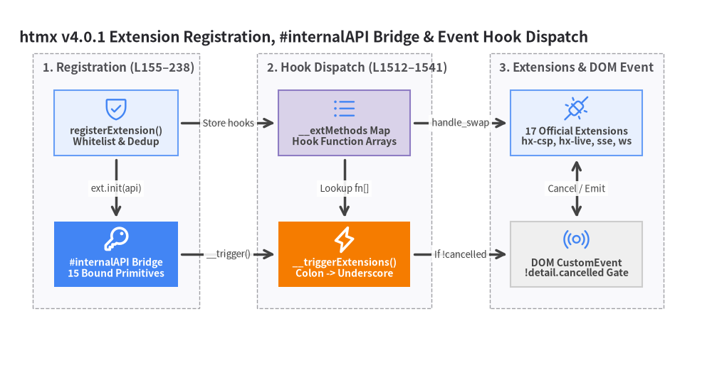
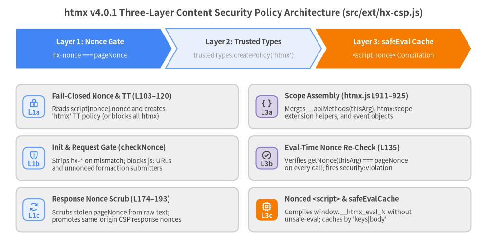
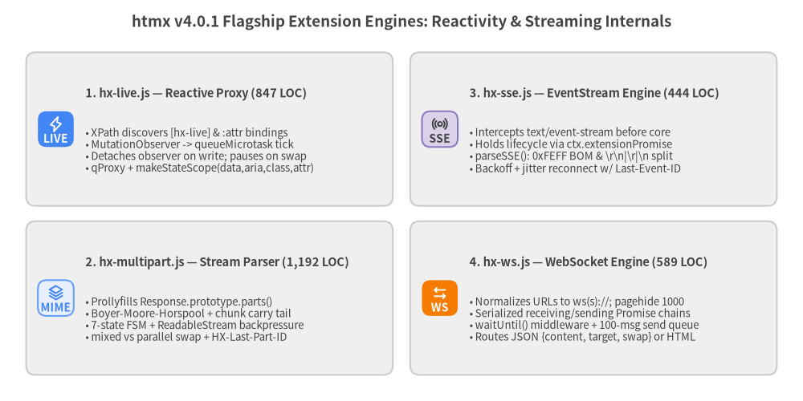

6. 拡張機能とセキュリティの内部構造 (Extension & Security Internals)
htmx v4.0.1 は、htmx 2 における要素ごとの hx-ext 属性検索を廃止し、グローバルなイベント駆動型拡張ディスパッチャ (src/htmx.js L230–238、L1529–1541 の registerExtension と __triggerExtensions)、15 個の特権メソッドを公開する #internalAPI ブリッジ (L155–175)、プラガブルなセキュリティおよび動的 JavaScript 評価サブシステム (L890–925、src/ext/hx-csp.js)、そして 17 個の公式拡張機能 (src/ext/*.js) へとアーキテクチャを一新しました。

Source Code
from drawlib import canvas
from drawlib.diagrams.architecture import ArchitectureDiagram, Node, NodeGroup, PhosphorIcon
from drawlib.styles import Styles
canvas.clear()
canvas.setup(width=184, height=96)
d = ArchitectureDiagram(
node_style=Styles.Primary,
node_text_style=Styles.DarkBold.patch(text_size=10.0),
edge_style=Styles.DarkBold,
edge_text_style=Styles.Dark.patch(text_size=9.5),
node_card_style=Styles.Neutral,
title="htmx v4.0.1 Extension Registration, #internalAPI Bridge & Event Hook Dispatch",
)
# Left Group: Extension Registration & #internalAPI
reg_group = d.add(NodeGroup(title="1. Registration (L155–238)", padding=5.5), xy=(6.0, 8.0))
reg_gate = reg_group.add(
Node("registerExtension()\nWhitelist & Dedup", width=32, height=17, icon=PhosphorIcon.SHIELD_CHECK, icon_size=7.0, card_style=Styles.PrimaryNeutral),
xy=(20.0, 52.0),
)
internal_api = reg_group.add(
Node("#internalAPI Bridge\n15 Bound Primitives", width=32, height=17, icon=PhosphorIcon.KEY, icon_size=7.0, style=Styles.WhiteBold, card_style=Styles.PrimaryFlat, text_style=Styles.WhiteBold.patch(text_size=10.0)),
xy=(20.0, 18.0),
)
# Center Group: Hook Storage & Event Dispatcher
disp_group = d.add(NodeGroup(title="2. Hook Dispatch (L1512–1541)", padding=5.5), xy=(64.0, 8.0))
ext_map = disp_group.add(
Node("__extMethods Map\nHook Function Arrays", width=34, height=17, icon=PhosphorIcon.LIST_BULLETS, icon_size=7.0, card_style=Styles.SecondaryNeutral),
xy=(21.0, 52.0),
)
trig_ext = disp_group.add(
Node("__triggerExtensions()\nColon -> Underscore", width=34, height=17, icon=PhosphorIcon.LIGHTNING, icon_size=7.0, style=Styles.WhiteBold, card_style=Styles.AccentFlat, text_style=Styles.WhiteBold.patch(text_size=10.0)),
xy=(21.0, 18.0),
)
# Right Group: Official Extensions & DOM CustomEvent
dom_group = d.add(NodeGroup(title="3. Extensions & DOM Event", padding=5.5), xy=(124.0, 8.0))
ext_suite = dom_group.add(
Node("17 Official Extensions\nhx-csp, hx-live, sse, ws", width=34, height=17, icon=PhosphorIcon.PLUGS_CONNECTED, icon_size=7.0, card_style=Styles.PrimaryNeutral),
xy=(21.0, 52.0),
)
dom_evt = dom_group.add(
Node("DOM CustomEvent\n!detail.cancelled Gate", width=34, height=17, icon=PhosphorIcon.BROADCAST, icon_size=7.0, card_style=Styles.Neutral),
xy=(21.0, 18.0),
)
d.connect(reg_gate, internal_api, label="ext.init(api)", padding=1.0)
d.connect(reg_gate, ext_map, label="Store hooks", padding=1.0)
d.connect(ext_map, trig_ext, label="Lookup fn[]", padding=1.0)
d.connect(ext_map, ext_suite, label="handle_swap", padding=1.0)
d.connect(internal_api, trig_ext, label="__trigger()", padding=1.0)
d.connect(trig_ext, dom_evt, label="If !cancelled", padding=1.0)
d.connect(ext_suite, dom_evt, label="Cancel / Emit", arrow="<->", padding=1.0)
d.draw(xy=(4.0, 4.0))
canvas.save()
1. イベント駆動型拡張ディスパッチャ (registerExtension と __triggerExtensions)
htmx v4 では、拡張機能は htmx.registerExtension(name, extension) (src/htmx.js L230–238) を介してグローバルに登録され、DOM 内に hx-ext="..." 属性を記述することなくすべての要素のライフサイクルに自動的に参加します。
1.1 ホワイトリスト制御、重複排除、フックのインデックス登録
registerExtension(name, extension) が呼び出されると、以下の処理が実行されます。
// src/htmx.js L230–238
registerExtension(name, extension) {
if (this.__approvedExt && !this.__approvedExt.split(/,\s*/).includes(name)) return false;
if (this.__registeredExt.has(name)) return false;
this.__registeredExt.add(name);
if (extension.init) extension.init(this.#internalAPI);
Object.entries(extension).forEach(([key, value]) => {
if(!this.__extMethods.get(key)?.push(value)) this.__extMethods.set(key, [value]);
});
}
- ホワイトリストの強制 (
this.__approvedExtL212、L231):__initHtmxConfig()の実行中、this.__approvedExtはthis.config.extensions(通常は<meta name="htmx-config" content='extensions:"hx-csp, hx-live"'>で設定) から初期化されます。this.__approvedExtが空でなく、かつその中にnameが含まれていない場合、registerExtensionは即座にfalseを返し、拡張機能の初期化および登録を拒否します。 - べき等な登録 (
this.__registeredExtL232–233):this.__registeredExt(Set<string>) により、スクリプトの重複読み込みによって同じ拡張フックが二重に登録されることを防ぎます。 - 特権 API による初期化 (
extension.init(this.#internalAPI)L234): 登録時に 1 度だけ、バインド済みの#internalAPIオブジェクトをextension.initに渡します。 - フックテーブルへの格納 (
this.__extMethodsL235–237):extensionオブジェクトの各プロパティがthis.__extMethods: Map<string, Function[]>内の関数配列に追加されます。
1.2 コロンからアンダースコアへのイベント名変換とキャンセルプロトコル
コアが this.__trigger(on, eventName, detail, bubbles) (L1512–1527) を呼び出すたび、htmx は DOM の CustomEvent をディスパッチする前に同期的に拡張フックを実行します。
// src/htmx.js L1524–1541, L1586–1597
on = this.__normalizeElement(on);
this.__triggerExtensions(on, eventName, detail);
return this.trigger(on, this.__maybeAdjustMetaCharacter(eventName), detail, bubbles);
__triggerExtensions(elt, eventName, detail = {}) {
let methods = this.__extMethods.get(eventName.replace(/:/g, '_'));
if (methods) {
detail.cancelled = false;
for (const fn of methods) {
if (fn(elt, detail) === false || detail.cancelled) {
detail.cancelled = true;
return false;
}
}
}
return true;
}
- コロンからアンダースコアへの変換 (
L1530): 任意の htmx イベント名htmx:phase:actionは、eventName.replace(/:/g, '_')によって有効な JavaScript 識別子 (htmx_phase_action) に変換されます。具体例は以下の通りです。htmx:before:request$\rightarrow$htmx_before_request(elt, detail)htmx:before:morph:node$\rightarrow$htmx_before_morph_node(elt, detail)htmx:process:upsert$\rightarrow$htmx_process_upsert(templateElt, detail)htmx:scope$\rightarrow$htmx_scope(elt, detail)
- 非イベントフック:
__extMethods内の 2 つの特別なキーは、__triggerExtensions経由ではなく直接呼び出されます。init(internalAPI)—registerExtension時に 1 度だけ呼び出されます (L234)。handle_swap(swapStyle, target, fragment, swapSpec)—swapStyleが 12 種類の組み込みスワップスタイルのいずれにも一致しない場合に__insertContent(L1456–1470) から呼び出されます。
- 短絡キャンセル (Short-Circuit Cancellation
L1532–1538、L1595): いずれかの拡張フックがfalseを返すかdetail.cancelled = trueを設定した場合、__triggerExtensionsはdetail.cancelled = trueを設定してそのイベントの残りの拡張フックを中断し、this.trigger()(L1595の!detail?.cancelled && target.dispatchEvent(evt)) に DOMCustomEventのディスパッチをスキップさせて呼び出し元へfalseを返させます。
2. #internalAPI ブリッジ (src/htmx.js L155–175)
__ で始まる Htmx の内部メソッドは、npm run build:iife および build:esm ビルドステップ (sed -e 's/__/#/g') において ES2022 のプライベート # メソッドへと書き換えられるため、外部の拡張機能はグローバルな htmx インスタンス上で htmx.#attributeValue() などを直接呼び出すことができません。その代わり、constructor() が this.#internalAPI (L155–175) を構築し、extension.init(api) に対して 15 個のバインド済み内部プリミティブを公開します。
#internalAPI キー |
バインド対象 (src/htmx.js) |
シグネチャと拡張機能での主な用途 |
|---|---|---|
HCON |
HCON (L8–92、L156) |
{ parse(str), merge(str, target), split(str) } パーサー。hx-sse、hx-ws、およびカスタム設定属性で使用されます。 |
attributeValue |
this.__attributeValue (L288–318) |
(elt, name, defaultVal?, eltCollector?, allowInheritance?) — :inherited や :append の解決を含めて hx-* / data-hx-* 属性を読み取ります。 |
parseTriggerSpecs |
this.__parseTriggerSpecs (L523–601) |
(specStr) — トリガー文字列を構造化された { name, filters, delay, timeout, ... } 仕様へとパースします (hx-preload で使用)。 |
determineMethodAndAction |
this.__determineMethodAndAction (L429–463) |
(elt, evt) — hx-get..hx-delete、hx-action、またはブーストされた <a>/<form> から { method, action } を解決します (hx-preload で使用)。 |
createRequestContext |
this.__createRequestContext (L354–427) |
(sourceElement, sourceEvent) — HX-* ヘッダーを含む完全なリクエスト ctx オブジェクトを構築します (hx-preload と hx-ws で使用)。 |
collectFormData |
this.__collectFormData (L1807–1831) |
(elt, form, submitter, validate?, isGet?) — hx-include と submitter を考慮して FormData を収集します (hx-preload と hx-ws で使用)。 |
getAttributeObject |
this.__getAttributeObject (L1875–1893) |
(elt, attrName, callback, scope?) — hx-vals / hx-headers 向けに HCON/JSON のパースまたは js: 式の評価を行います。 |
insertContent |
this.__insertContent (L1360–1510) |
async (task, cssTransition?) — 単一のスワップおよびセトルタスクを実行します。 |
morph |
this.__morph (L2018–2032) |
(oldNode, fragment, innerHTML) — Idiomorph エンジンを直接呼び出します (hx-alpine-compat が L74 で _x_teleport ターゲットをモーフするために使用)。 |
isSoftMatch |
this.__isSoftMatch (L2153–2160) |
(oldNode, newNode) => boolean — __findBestMatch (L2129) から呼び出される #internalAPI 上の変更可能なプロパティ。hx-alpine-compat (L24–31) がこれをオーバーライドし、Alpine の x-bind:id / :id 要素が動的 ID の変化に関わらずソフトマッチできるようにします。 |
initSecurity |
アロークロージャ (L166–170) |
(ttPolicy, syncFn, asyncFn) — this.#ttPolicy、this.#Function、および this.#AsyncFunction を置き換えます (hx-csp で使用)。 |
onTrigger |
this.__onTrigger (L622–758) |
(elt, specString, handler) — 完全な htmx トリガー仕様 (イベント、load、revealed、intersect、every、キュー、フィルター) をカスタム handler に配線します (hx-sse、hx-ws、hx-multipart で使用)。 |
htmxProp |
this.__htmxProp (L345–347) |
`(elt) => elt._htmx |
triggerHtmxEvent |
this.__trigger (L1512–1527) |
(on, eventName, detail?, bubbles?) — logAll によるログ出力、__triggerExtensions の実行、およびキャンセル可能な DOM CustomEvent のディスパッチを行います。 |
executeJavaScript |
this.__executeJavaScript (L911–925) |
(thisArg, obj, code, expression?, isAsync?, compile?) — htmx:scope 注入を伴う JS 式の評価または事前コンパイルを行います (hx-live で使用)。 |
3. セキュリティアーキテクチャ、動的 JS 評価、hx-csp.js
htmx v4 は、すべての動的 JavaScript 評価および HTML/スクリプトシンクの生成を Htmx 上の 3 つのプライベートフィールド (L138–140 の #Function、#AsyncFunction、#ttPolicy) に集約しています。これにより、hx-csp 拡張 (src/ext/hx-csp.js、220 行) はコアロジックを一切変更することなく厳格な Content Security Policy (CSP) を強制できます。

Source Code
from drawlib.canvas import save, setup
from drawlib.icons import phosphor
from drawlib.smartarts import CardList, ChevronProcess
from drawlib.styles import Styles
from drawlib.text import text
setup(width=184, height=94)
text(
(92, 89),
"htmx v4.0.1 Three-Layer Content Security Policy Architecture (src/ext/hx-csp.js)",
style=Styles.DarkBold.patch(text_size=13.5),
)
# Top: 3-Layer Defense Overview
layers = ChevronProcess(
style=Styles.Neutral,
text_style=Styles.DarkBold.patch(text_size=10.5),
description_style=Styles.Muted.patch(text_size=9.5),
corner_angle=60.0,
spacing=2.0,
flat_left_end=True,
)
layers.add(
"Layer 1: Nonce Gate",
description="hx-nonce === pageNonce",
style=Styles.PrimaryFlat,
text_style=Styles.WhiteBold.patch(text_size=10.5),
description_style=Styles.White.patch(text_size=9.5),
)
layers.add("Layer 2: Trusted Types", description="trustedTypes.createPolicy('htmx')", style=Styles.PrimaryNeutral)
layers.add(
"Layer 3: safeEval Cache",
description="<script nonce> Compilation",
style=Styles.AccentFlat,
text_style=Styles.WhiteBold.patch(text_size=10.5),
description_style=Styles.White.patch(text_size=9.5),
)
layers.draw(xy=(6.0, 68.0), width=172.0, height=15.0)
# Bottom-Left: Layer 1 & 2 — DOM & Response Nonce Enforcement
col_left = CardList(
style=Styles.Neutral,
text_style=Styles.DarkBold.patch(text_size=10.5),
description_style=Styles.Dark.patch(text_size=9.5),
badge_shape="rounded_rect",
badge_style=Styles.PrimaryNeutral,
badge_text_style=Styles.PrimaryBold.patch(text_size=10.0),
icon_style=Styles.PrimaryBold,
direction="vertical",
spacing=2.6,
)
col_left.add(
"Fail-Closed Nonce & TT (L103–120)",
"Reads script[nonce].nonce and creates\n'htmx' TT policy (or blocks all htmx)",
badge_text="L1a",
icon=phosphor.lock_key,
)
col_left.add(
"Init & Request Gate (checkNonce)",
"Strips hx-* on mismatch; blocks js: URLs\nand unnonced formaction submitters",
badge_text="L1b",
icon=phosphor.shield_warning,
)
col_left.add(
"Response Nonce Scrub (L174–193)",
"Scrubs stolen pageNonce from raw text;\npromotes same-origin CSP response nonces",
badge_text="L1c",
icon=phosphor.arrows_clockwise,
)
col_left.draw(xy=(6.0, 6.0), width=84.0, height=56.0)
# Bottom-Right: Layer 3 — __executeJavaScript & safeEval Compilation
col_right = CardList(
style=Styles.Neutral,
text_style=Styles.DarkBold.patch(text_size=10.5),
description_style=Styles.Dark.patch(text_size=9.5),
badge_shape="rounded_rect",
badge_style=Styles.SecondaryNeutral,
badge_text_style=Styles.DarkBold.patch(text_size=10.0),
icon_style=Styles.DarkBold,
direction="vertical",
spacing=2.6,
)
col_right.add(
"Scope Assembly (htmx.js L911–925)",
"Merges __apiMethods(thisArg), htmx:scope\nextension helpers, and event objects",
badge_text="L3a",
icon=phosphor.brackets_curly,
)
col_right.add(
"Eval-Time Nonce Re-Check (L135)",
"Verifies getNonce(thisArg) === pageNonce\non every call; fires security:violation",
badge_text="L3b",
icon=phosphor.check_circle,
)
col_right.add(
"Nonced <script> & safeEvalCache",
"Compiles window.__htmx_eval_N without\nunsafe-eval; caches by 'keys|body'",
badge_text="L3c",
icon=phosphor.cpu,
badge_style=Styles.AccentFlat,
badge_text_style=Styles.WhiteBold.patch(text_size=10.0),
icon_style=Styles.WhiteBold,
)
col_right.draw(xy=(94.0, 6.0), width=84.0, height=56.0)
save()
3.1 コアの動的 JS 評価 (__executeJavaScript と __apiMethods)
htmx が hx-on:* ハンドラー (L1729)、hx-vals="js:..." / hx-headers="js:..." 式 (L1886)、角括弧付きトリガーフィルター click[ctrlKey] (L702)、または hx-live のリアクティブバインディングを評価する際は、常に __executeJavaScript (src/htmx.js L890–925) を呼び出します。
// src/htmx.js L890–925
__apiMethods(thisArg) {
let bound = {};
let proto = Object.getPrototypeOf(this);
for (let name of Object.getOwnPropertyNames(proto)) {
if (name !== 'constructor' && typeof this[name] === 'function') {
if (["find", "findAll"].includes(name)) {
bound[name] = (arg1, arg2) => {
if (arg2 === undefined) {
return this[name](thisArg, arg1);
} else {
return this[name](arg1, arg2);
}
};
} else {
bound[name] = this[name].bind(this);
}
}
}
return bound;
}
__executeJavaScript(thisArg, obj, code, expression = true, isAsync = true, compile = false) {
let args = {};
Object.assign(args, this.__apiMethods(thisArg));
let scope = {};
let detail = { scope, code };
this.__triggerExtensions(thisArg, "htmx:scope", detail);
code = detail.code;
Object.assign(args, scope);
Object.assign(args, obj);
let keys = Object.keys(args);
let values = Object.values(args);
let FunctionConstructor = isAsync ? this.#AsyncFunction : this.#Function;
let func = new FunctionConstructor(...keys, expression ? `return (${code})` : code);
return compile ? () => func.call(thisArg, ...values) : func.call(thisArg, ...values);
}
主なアーキテクチャ上の特徴は以下の通りです。
- コンテキストにバインドされた公開 API (
__apiMethodsL890–909):Htmx.prototypeのすべての公開メソッド (ajax、trigger、process、swap、timeout、parseInterval、on、onLoad) を式のスコープに自動注入するとともに、find(sel)とfindAll(sel)をカリー化して 1 引数での呼び出しがthisArgを起点として解決されるようにします。 htmx:scope拡張フック (L915–918):this.__triggerExtensions(thisArg, "htmx:scope", { scope, code })を発火します。これにより、hx-live(src/ext/hx-live.jsL839–844) はリアクティブヘルパー (q、data、aria、attr、local、closest、toggle、take、debounce、forEvent、nextFrame、insert、matches、style) をdetail.scopeに注入し、detail.code内の予約語トークンclass.fooをattr.class.fooへと書き換えることができます。- 再利用可能な事前コンパイル (
compile = trueL924):compile === true(hx-liveのregisterLiveがL764で使用) の場合、__executeJavaScriptはfuncを 1 度だけ構築して無引数クロージャ() => func.call(thisArg, ...values)を返すため、リアクティブティックのたびにスコープ構築やnew FunctionConstructor()を再実行するオーバーヘッドが発生しません。
3.2 3 層 CSP 防御アーキテクチャ (src/ext/hx-csp.js)
src/ext/hx-csp.js を読み込むと、相互に連携する 3 つの防御レイヤーによって HTML インジェクションおよび XSS 攻撃に対する強力な保護が有効になります。
- レイヤー 1 — Nonce ゲートと盗難 Nonce のスクラブ (
L40–108、L168–216):- フェイルクローズ初期化 (
L103–108):pageNonce = document.querySelector('script[nonce]')?.nonce || nullを読み取ります (CSS 属性セレクターによる Nonce 漏洩を防ぐためにブラウザが HTML のnonce=""属性値を空にした後でも、JS から読み取り可能な DOM の.nonceプロパティを使用します)。pageNonceが存在しない場合、hx-cspはエラーを出力してpageNonce = nullのままとし、すべてのフックにfalseを返させて htmx の動作を完全にブロックします。 - 要素初期化ゲート (
checkNonceL44–48、stripHxAttributesL79–94):htmx_before_initとhtmx_before_on_initの両方にフックします。hx-nonce(internalApi.attributeValue(elt, 'hx-nonce')により:inheritedをサポート) を読み取り、eltNonce !== pageNonceの場合はstripHxAttributesによってeltからすべてのhx-*/data-hx-*属性を剥奪し、エラーを出力してhtmx:security:strip({ reason: 'missing-nonce' | 'nonce-mismatch', stripped }) を発火し、初期化をキャンセルします。 - レスポンス Nonce のスクラブと同一オリジン昇格 (
htmx_after_requestL174–193):- 第一に、生の
ctx.textからpageNonceを無条件にスクラブ (消去) します (L180のrewriteNoncesInText(ctx.text, pageNonce, ''))。サーバーは HTTP レスポンスごとに新しい Nonce を生成し、クライアントの初回pageNonceを知る由もないため、サーバーレスポンス内にpageNonceが含まれている場合は反射型または格納型の盗難 Nonce 攻撃であることを意味します。 - 第二に、
new URL(ctx.response.raw.url).origin === location.originによって同一オリジンであることを検証します。検証された同一オリジンレスポンスに対してのみ、hx-cspはContent-Security-Policyヘッダー (L51–53でscript-src/default-srcにアンカーされたextractNonceFromCSP) または<meta http-equiv="Content-Security-Policy">(extractNonceFromMetaTagL57–61) からレスポンスの新しい Nonce を抽出し、__makeFragmentがパースする前にctx.text内のnonce="${responseNonce}"をnonce="${pageNonce}"へと書き換えます。
- 第一に、生の
- リクエスト Action および Submitter ゲート (
htmx_config_requestL198–216):actionがjs:またはjavascript:で始まるリクエスト (reason: 'javascript-url')、およびブーストされた<form>送信において有効なhx-nonceを持たない送信ボタンがformactionを上書きしているケース (reason: 'unnonced-submitter') をブロックし、htmx:security:violationを発火してdetail.cancelled = trueを設定します。
- フェイルクローズ初期化 (
- レイヤー 2 — Trusted Types ポリシー (
L112–120):trustedTypes.createPolicy('htmx', { createHTML: s => s, createScript: s => s })を呼び出し、api.initSecurity(...)に渡します。ページの CSPtrusted-typesディレクティブで'htmx'がホワイトリスト登録されていない場合はポリシー作成時に例外がスローされ、hx-cspはpageNonce = nullを設定してフェイルクローズします。 - レイヤー 3 —
safeEvalによる Nonce 付きスクリプトコンパイル (L122–165):makeGatedConstructor(isAsync)が#Functionと#AsyncFunctionを置き換えます。- 呼び出しのたびに
getNonce(thisArg) === pageNonce(L135) を再検証し、初期化後に攻撃者が DOM を改ざんしていた場合は実行をブロックしてhtmx:security:violation({ reason: 'nonce-mismatch-at-eval' }) を発火します。 htmx.config.safeEval: trueが有効な場合、new Function()を使用せず (そのため CSP に'unsafe-eval'が不要になります)、document.headに一時的な<script nonce="${pageNonce}">要素を追加して即座に削除する方式 (L146–155) で関数をコンパイルし、コンパイル済み関数をkeys.join(',') + '|' + bodyをキーとしてsafeEvalCache: Map<string, Function>にキャッシュします。
- 呼び出しのたびに
4. 公式 17 拡張機能の徹底解剖 (src/ext/*.js)
4.1 公式 17 拡張機能の完全インベントリ
src/ext/ ディレクトリには、合計 4,529 行 (LOC) に及ぶ 17 個の公式拡張機能が収録されています。package.json (L28 の build:htmax) で定義されている通り、このうち 11 個の拡張機能はオールインワン配布版 dist/htmax.js にバンドルされています (なお history-cache は htmx.config.historyCache ??= { disable: true } として事前設定された状態で同梱されます)。
ファイル (src/ext/) |
登録名 | LOC | htmax 同梱 |
主な拡張フックとアーキテクチャ上の役割 |
|---|---|---|---|---|
hx-multipart.js |
'hx-multipart' |
1,192 | No | htmx_config_request, htmx_after_process, htmx_before_response, htmx_before_cleanup。ストリーミング multipart/mixed & multipart/parallel パーサーおよび Response.prototype.parts() prollyfill。 |
hx-live.js |
'hx-live' |
847 | Yes | htmx_after_process, htmx_before_swap, htmx_finally_swap, htmx_before_cleanup, htmx_before_morph_attr, htmx_scope。リアクティブな :attr/hx-live バインディングと q() Proxy エンジン。 |
hx-ws.js |
'ws' |
589 | Yes | htmx_after_process, htmx_before_cleanup。双方向 WebSocket ライフサイクル (hx-ws:connect, hx-ws:send)、直列化送受信キュー、自動再接続。 |
hx-sse.js |
'sse' |
444 | Yes | htmx_config_request, htmx_before_response, htmx_after_process, htmx_before_cleanup。Fetch ベースの text/event-stream リーダー (parseSSE)、Last-Event-ID 再接続、extensionPromise。 |
hx-history-cache.js |
'history-cache' |
250 | Yes (off) | htmx_before_history_update, htmx_after_history_update, htmx_before_history_restore。入力値とスクロール位置を保持する LRU sessionStorage ページスナップショットキャッシュ。 |
hx-csp.js |
'hx-csp' |
220 | No | init (initSecurity), htmx_before_init, htmx_before_on_init, htmx_after_request, htmx_config_request。Nonce ゲート、Trusted Types ポリシー、safeEval。 |
hx-head.js |
'hx-head' |
191 | No | htmx_before_response, htmx_after_swap, htmx_history_cache_before_restore, htmx_history_cache_after_restore。<head> タグの差分マージと、スワップ前のブロッキング CSS/JS の読み込み待機。 |
hx-alpine-compat.js |
'alpine-compat' |
111 | Yes | init (api.isSoftMatch を上書き), htmx_before_swap, htmx_before_morph_node, htmx_after_swap, htmx_finally_request, htmx_history_cache_*。モーフ前後での Alpine _x_dataStack と _x_teleport のブリッジ。 |
hx-pending.js |
'hx-pending' |
103 | Yes | htmx_config_request, htmx_before_request, htmx_before_swap, htmx_error。リクエスト進行中にリクエストボディの data-* 属性を刻印した楽観的 <template> プレースホルダーを描画。 |
hx-preload.js |
'preload' |
103 | Yes | htmx_after_init, htmx_before_request, htmx_before_cleanup。mousedown/touchstart (またはカスタムトリガー) 時に 5 秒 TTL キャッシュ付きで GET レスポンスをプリフェッチ (ctx.fetch = () => prefetch)。 |
htmx-2-compat.js |
'compat' |
94 | No | init、16 個の htmx_* フック。implicitInheritance = true の有効化、noSwap への "4xx", "5xx" 追加、および旧 camelCase イベント (htmx:afterRequest 等) の再ディスパッチ。 |
hx-upsert.js |
'upsert' |
90 | Yes | htmx_process_upsert, handle_swap。<hx-upsert> と hx-swap="upsert" を実装し、id による既存要素の更新または key 順 (numeric: true 付き localeCompare) でのソート挿入を実行。 |
hx-browser-indicator.js |
'browser-indicator' |
89 | Yes | htmx_before_history_update, htmx_before_request, htmx_finally_request。Navigation API (navigation.navigate + event.intercept) を用いてブラウザネイティブのタブローディングスピナーを起動。 |
hx-download.js |
'download' |
89 | Yes | htmx_before_response。hx-swap="download"、Content-Disposition: attachment、または HX-Download ヘッダーをインターセプトし、htmx:download:progress を発火しながらチャンクをストリームして Blob ダウンロードを実行。 |
hx-targets.js |
'hx-targets' |
46 | Yes | htmx_before_swap。一致した各ターゲット要素ごとにクローンしたタスクへ main スワップタスクを分割 (splice) することで hx-targets="<selector>" を展開。 |
hx-ptag.js |
'ptag' |
37 | No | htmx_after_init, htmx_config_request, htmx_after_request。要素ごとのポーリングタグ (hx-ptag / HX-PTag ヘッダー) を保持し、サーバーが 304 Not Modified を返せるように制御。 |
hx-prompt.js |
'hx-prompt' |
24 | No | htmx_config_request。`window.htmxPrompt |

Source Code
from drawlib.canvas import save, setup
from drawlib.icons import phosphor
from drawlib.smartarts import CardList
from drawlib.styles import Styles
from drawlib.text import text
setup(width=184, height=92)
text(
(92, 87),
"htmx v4.0.1 Flagship Extension Engines: Reactivity & Streaming Internals",
style=Styles.DarkBold.patch(text_size=13.5),
)
# Left Column: hx-live & hx-multipart
col_left = CardList(
style=Styles.Neutral,
text_style=Styles.DarkBold.patch(text_size=10.5),
description_style=Styles.Dark.patch(text_size=9.5),
badge_shape="rounded_rect",
badge_style=Styles.PrimaryFlat,
badge_text_style=Styles.WhiteBold.patch(text_size=10.0),
icon_style=Styles.WhiteBold,
direction="vertical",
spacing=3.5,
)
col_left.add(
"1. hx-live.js — Reactive Proxy (847 LOC)",
"• XPath discovers [hx-live] & :attr bindings\n"
"• MutationObserver -> queueMicrotask tick\n"
"• Detaches observer on write; pauses on swap\n"
"• qProxy + makeStateScope(data,aria,class,attr)",
badge_text="LIVE",
icon=phosphor.lightning,
)
col_left.add(
"2. hx-multipart.js — Stream Parser (1,192 LOC)",
"• Prollyfills Response.prototype.parts()\n"
"• Boyer-Moore-Horspool + chunk carry tail\n"
"• 7-state FSM + ReadableStream backpressure\n"
"• mixed vs parallel swap + HX-Last-Part-ID",
badge_text="MIME",
icon=phosphor.stack,
badge_style=Styles.PrimaryNeutral,
badge_text_style=Styles.PrimaryBold.patch(text_size=10.0),
icon_style=Styles.PrimaryBold,
)
col_left.draw(xy=(6.0, 6.0), width=84.0, height=74.0)
# Right Column: hx-sse & hx-ws
col_right = CardList(
style=Styles.Neutral,
text_style=Styles.DarkBold.patch(text_size=10.5),
description_style=Styles.Dark.patch(text_size=9.5),
badge_shape="rounded_rect",
badge_style=Styles.SecondaryNeutral,
badge_text_style=Styles.DarkBold.patch(text_size=10.0),
icon_style=Styles.DarkBold,
direction="vertical",
spacing=3.5,
)
col_right.add(
"3. hx-sse.js — EventStream Engine (444 LOC)",
"• Intercepts text/event-stream before core\n"
"• Holds lifecycle via ctx.extensionPromise\n"
"• parseSSE(): 0xFEFF BOM & \\r\\n|\\r|\\n split\n"
"• Backoff + jitter reconnect w/ Last-Event-ID",
badge_text="SSE",
icon=phosphor.broadcast,
)
col_right.add(
"4. hx-ws.js — WebSocket Engine (589 LOC)",
"• Normalizes URLs to ws(s)://; pagehide 1000\n"
"• Serialized receiving/sending Promise chains\n"
"• waitUntil() middleware + 100-msg send queue\n"
"• Routes JSON {content, target, swap} or HTML",
badge_text="WS",
icon=phosphor.arrows_left_right,
badge_style=Styles.AccentFlat,
badge_text_style=Styles.WhiteBold.patch(text_size=10.0),
icon_style=Styles.WhiteBold,
)
col_right.draw(xy=(94.0, 6.0), width=84.0, height=74.0)
save()
4.2 リアクティブ DOM & Proxy エンジン (src/ext/hx-live.js、847 LOC)
hx-live.js は、独立した仮想 DOM やシャドウ状態ストアを一切持たず、ライブ DOM の上に直接スプレッドシートのようなリアクティブ属性バインディング (:disabled="!data.valid"、:text="data.count"、:.active="data.open"、?hidden) と副作用ブロック (hx-live="...") を構築します。
- マイクロタスクバッチ処理とスワップ中の一時停止 (
ensureActive&scheduleL22–70、L833–838):document.documentElement上にグローバルなMutationObserver({ childList: true, subtree: true, attributes: true, characterData: true })、キャプチャフェーズのchangeリスナー、およびhtmx.config.live?.inputDebounce ?? 100ms でデバウンスされたキャプチャフェーズのinputリスナーを登録します。schedule()は同一ターン内の複数の変更をqueueMicrotask()で 1 回にまとめます。マイクロタスク内では、リアクティブバインディングによる DOM 書き込みがMutationObserverを再帰的に再トリガーしないよう、fnsを評価する前にobserverを切断 (L55のobserver?.disconnect()) し、評価完了後に再接続します (L66)。また、1 回の評価パスが16ms(60Hz の 1 フレーム) を超えた場合は、パフォーマンス警告を 1 度だけ出力します (L59–62)。- htmx のスワップ中は、
htmx_before_swapがswaps++をインクリメントし、htmx_finally_swapが--swapsをデクリメントすることで、マルチタスクスワップが完了するまでリアクティブ再計算を保留します (L51のif (swaps > 0) return)。
- XPath による高速探索と事前コンパイル済みクロージャ (
buildLiveQueryL683–703、registerLiveL747–781):.//*[@*[starts-with(name(), "hx-live:") or starts-with(name(), ":")] or @hx-live]にマッチするコンパイル済みXPathEvaluator式を構築します (なおwindow.Alpineが検出された場合は、L690–693で短縮構文:プレフィックスを自動的に無効化して競合を回避します)。registerLive(elt, code, attrName)は、exec ||= api.executeJavaScript(elt, { debounce }, code, binding, isAsync, true)(L764) によって各式を 1 度だけ事前コンパイルします。hx-liveエフェクト内にawaitが含まれる場合は、overlapping = !binding && hasAwaitによって同一の非同期エフェクトが重複して並列実行されることを防ぎます (L752、L761)。
- リアクティブ
Proxy階層 (qProxy、makeStateScope、makeClosestL140–362、L631–679):makeStateScope(elts, cascades)(L313–322): 4 つの専用 Proxy を遅延構築します。data:makeAttrProxy(elts, cascades, null, 'data-')— camelCase プロパティをdata-kebab-case属性に変換し、JSON 値を自動的にパース・文字列化します (readData/writeDataL212–215、L378–381)。aria:makeAttrProxy(elts, cascades, null, 'aria-')— 文字列 ARIA 属性、空白区切りの ID 参照リスト (controls、labelledby)、および JSON 真偽値 ARIA 値を処理します (L231–232、L364–376)。class:makeClassProxy(elts, cascades)—.class.foo = true、.class.toggle('foo')、.class.add()、.class.remove()、.class.replace()、および.class.assign({ active: true })をサポートします (L246–311)。attr:makeAttrProxy(elts, cascades, scope, '')—PROPERTY_BINDING_ATTRS(checked、value、selected、hidden)、BOOLEAN_ATTRS(disabled、open、inert等)、NUMERIC_ATTRS(tabindex、min、max)、および<input type="number|range">のvalueAsNumberを適切に型変換します (L72–115)。
makeClosest(elts)(L327–340): 呼び出し可能なfunction(){}をProxyでラップし、applyトラップ (closest('.card')が最も近い一致祖先のqProxyを返す) とgetトラップ (closest.data.countがparentElementを遡ってdata-countを持つ最も近い祖先を読み書きする) の両方を提供します。makeExpressionScope(elt)(L357) では、単体のdataがclosest.dataにエイリアスされているため、子コンポーネントは祖先コンテナの状態を自然に共有できます。makeQ(ctx)とqProxy(elts)(L552–679): スコープ付きクエリ (q('.item in #list')、q('.btn in this')) および方向指定クエリ (compareDocumentPositionのビットマスク& 4と& 2を用いたq('next .panel')、q('previous .tab')、q('closest tr')、q('first li')、q('last li')) をサポートし、配列メソッド (map、filter、forEach)、DOM メソッド、およびリアクティブプロパティ代入を一致した全要素へ一括転送するマルチ要素qProxyを返します。
4.3 ストリーミング Multipart 境界パーサー (src/ext/hx-multipart.js、1,192 LOC)
hx-multipart.js は、単一の HTTP レスポンス (Content-Type: multipart/mixed または multipart/parallel) から時間経過とともに複数の HTML フラグメントをストリーミングし、各パートが独自の HX-Target、HX-Swap、HX-Select、HX-Trigger、または HX-Part-ID ヘッダーを持つことを可能にします。
- リクエストのインターセプト (
htmx_before_responseL409–429): レスポンスのContent-Typeがmultipart/mixedまたはmultipart/parallelの場合、hx-multipartはctx.requestTimeoutをクリア (clearTimeout(ctx.requestTimeout)) し、ctx.response.raw.text = async () => { await handleMultipartResponse(ctx, type); ctx.swap = 'none'; return ''; }を上書きします。コアがresponse.text()を待機している間にhandleMultipartResponseがストリームを消費し、完了後にctx.swap = 'none'を設定します。 - 組み込み
MultipartParserとResponse.prototype.parts()Prollyfill (L436–1190):- Boyer-Moore-Horspool バイト検索 (
createSearchL469–486): UTF-8 エンコードされた\r\n--${boundary}ニードルに対して 256 エントリのUint8Arrayスキップテーブルを事前計算し、到着するUint8Arrayネットワークチャンクをサブリニア時間で高速スキャンします。 - チャンク境界を跨ぐ末尾一致検出 (
createPartialTailSearchL490–512&#analyzeCarryBoundaryL785–809): チャンクの末尾が\r\n--${boundary}のプレフィックスで終わっている場合、パーサーはその末尾サフィックスのみをthis.#bufferに保持 (それ以前のバイトは即座にアクティブなBodyPartへ転送) し、次のチャンクが到着した際に結合して判定します。 - 7 状態のパーサー有限オートマトン (
StateL516–531):START(--boundaryより前の RFC 2046 プリアンブルバイトを破棄) $\rightarrow$READING_BOUNDARY_SUFFIX(\r\nか終端--かを判定) $\rightarrow$READING_HEADERS(\r\n\r\nをスキャン) $\rightarrow$READING_BODY_WITH_CONTENT_LENGTH(パートにContent-Lengthが宣言されている場合の高速パス、完了後EXPECTING_BOUNDARYへ) またはREADING_BODY_UNTIL_BOUNDARY$\rightarrow$DONEへと状態遷移します。 - プル駆動のバックプレッシャー (
BodyPart&iterateStreamPartsL833–990、L1109–1173):parser.onPullは、アクティブなBodyPartのReadableStreamDefaultControllerがdesiredSize > 0(part._wantsMore()) である場合にのみ基盤の fetch ストリーム上でreader.read()を呼び出し、コンシューマー側のバックプレッシャーをネットワークソケットまで正確に伝播させます。
- Boyer-Moore-Horspool バイト検索 (
- 直列 vs. 並列スワップと順序保証チェックポイント再接続 (
L231–335):- 生成された各
partについて、handleMultipartResponseはhtmx:multipart:before:part(L248–256でdetail.waitUntil(promise)非同期ミドルウェアをサポート) を発火し、パートごとのHX-*ヘッダー (extractPartActions) を抽出してhtmx.swap(...)を実行します。 multipart/mixedでは各パートのスワップを直列に待機 (L315のawait handling) します。一方multipart/parallelではhandlingPromise をpendingSet(L308–313) に追加し、各パートのボディがストリーミング完了した順から並列にスワップを実行します。- 順序保証チェックポイント追跡 (
checkpointsL269–303):multipart/parallelの並列パートは順不同で完了し得るため、connection.lastPartIdは先頭から連続して完了したcheckpointsのプレフィックス (while (checkpoints[checkpointIndex]?.completed)) に沿ってのみ進められます。再接続時 (指数バックオフ、ジッター、visibilitychangeによるバックグラウンド一時停止をサポート) にはHX-Last-Part-IDが送信され、サーバーは最後に連続して完了したチェックポイントから再開できます (L180–185)。
- 生成された各
4.4 Server-Sent Events と WebSockets (hx-sse.js 444 LOC & hx-ws.js 589 LOC)
2 つのストリーミングトランスポート拡張機能は、いずれも htmx.swap() および #internalAPI と緊密に統合されています。
src/ext/hx-sse.js(登録名'sse'):ctx.extensionPromiseによるライフサイクル制御 (L125–132、L292、L313、L406–415):htmx_before_responseにおいて、Content-Typeにtext/event-streamが含まれている場合、hx-sseはctx.requestTimeoutをクリアし、ctx.extensionPromise = new Promise(resolve => releaseRequest = resolve)を割り当ててfalseを返します (これにより、コアのfinallyブロックがctx.extensionPromiseを待機している間、コアがボディを単一の HTML レスポンスとして読み取るのを防ぎます)。config.releaseOnの設定に応じて、release()は'immediate'(hx-sse:connectのデフォルト)、最初のメッセージがスワップされた'first'、サーバーが名前付きevent: hx:releaseメッセージを送信した時点 (L292)、またはストリームの終了時'end'(text/event-streamを返す通常のhx-getリクエストのデフォルト) に呼び出されます。- 仕様準拠の
parseSSE(connection)非同期ジェネレーター (L37–111):TextDecoder({ stream: true })を介してcurrentResponse.body.getReader()を読み取り、先頭の UTF-8 BOM (L55の0xFEFF) を除去し、行を/\r\n|\r|\n/で分割し、:で始まるコメント行を無視し、複数行のdata:フィールドを\nで結合して蓄積し、id:(WHATWG SSE 仕様に従いL95で null バイト\0を含む値を無視) を追跡し、retry:再接続遅延を更新し、finallyブロックでconnection.reader = nullと同一ティックでリーダーロックを解放します。 - ルーティングと再接続 (
L184–326): 名前付き SSE イベント (detail.message.event) はhtmx.trigger(element, detail.message.event, { data, id })によってelement上の DOM イベントとしてディスパッチされます (hx-sse:closeに一致する場合はストリームを閉じます)。名前なしメッセージはswapEmpty:falseを付与したawait htmx.swap(ctx)によって直接スワップされます (L308–312)。切断時には、handleSSEResponseが指数バックオフ (reconnectDelay: 500、reconnectMaxDelay: 60000、reconnectJitter: 0.3) を用いてLast-Event-ID付きで再接続し、タブが非表示の間は一時停止します (pauseOnBackground)。
src/ext/hx-ws.js(登録名'ws'):- URL の正規化と Pagehide クリーンアップ (
L46–77、L577–586):normalizeWebSocketUrl(url)はhttp://$\rightarrow$ws://、https://$\rightarrow$wss://、プロトコル相対//host/path、ルート相対/path、およびドキュメント相対パスを完全なws(s)://URL へと変換します。また、window.addEventListener('pagehide', ...)リスナーがページ遷移時にすべてのアクティブなソケットをコード1000でクリーンに閉じます。 - 直列化された Promise チェーンとミドルウェア (
connection.receivingL190&connection.sendingL333): 受信した WebSocketmessageイベントはconnection.receiving = connection.receiving.then(() => handleMessage(...))にチェーンされるため、htmx:ws:before:message:incoming内の非同期waitUntil(promise)フックおよび非同期htmx.swap()呼び出しが厳密に到着順で実行されます。同様に、sendMessageはconnection.sendingにチェーンされ、api.createRequestContext経由でHX-*ヘッダーを収集し、FormData(チェックボックスや複数選択の複数値配列を保持) とhx-vals(L331で JSON 内のネイティブ JS 数値・真偽値を保持) をシリアライズし、ソケット接続中は最大maxOutgoingMessagesQueueSize: 100件のメッセージをバッファリングします。 - JSON エンベロープ vs. 生 HTML のルーティング (
handleMessageL420–462): 受信メッセージが JSON としてパースでき、かつcontent(またはレガシーなpayload) プロパティを含む場合、hx-wsはメッセージ単位のオーバーライドjson.target、json.swap、json.select(未指定時は要素のhx-target/hx-swap/hx-select属性にフォールバック) を使用してjson.contentをスワップします。非 JSON テキストの場合は生の文字列をそのまま HTML としてスワップし、content/payloadを持たない JSON の場合は DOM スワップを行わずにデータのみのイベントペイロードとして扱います。 - クローズコードに基づく選択的再接続 (
L22–30、L209): クローズイベントのコードがreconnectCodes: [1001, 1005, 1006, 1011, 1012, 1013, 1014]に含まれる場合にのみ自動的に指数バックオフ再接続をスケジュールし、正常終了コード1000の場合は再接続をスキップします。
- URL の正規化と Pagehide クリーンアップ (
拡張機能が生成したタスクがどのように DOM 挿入およびツリー照合を通過するかを振り返るには、アーキテクチャ概要 に戻るか、第 5 章: スワップ・セトル・モーフエンジン を参照してください。